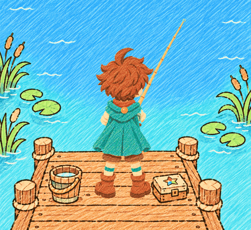
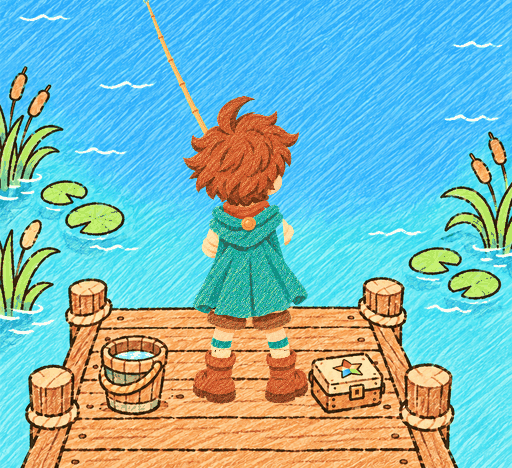
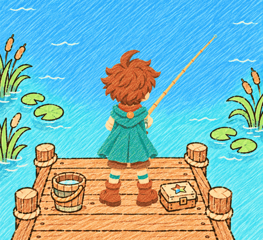
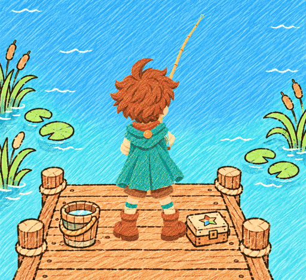

Bến câu: cậu thám hiểm câu cá (AtomSpine, bản rig 1)
Dây câu và phao do game vẽ (chưa có ở đây). Viền mực vẽ sau cùng khi chốt animation.




Dây câu và phao do game vẽ (chưa có ở đây). Viền mực vẽ sau cùng khi chốt animation.



